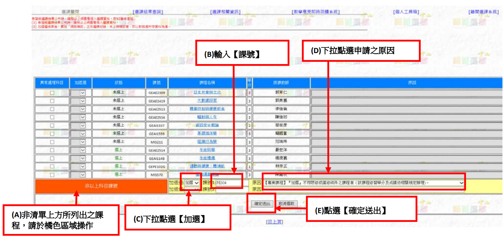
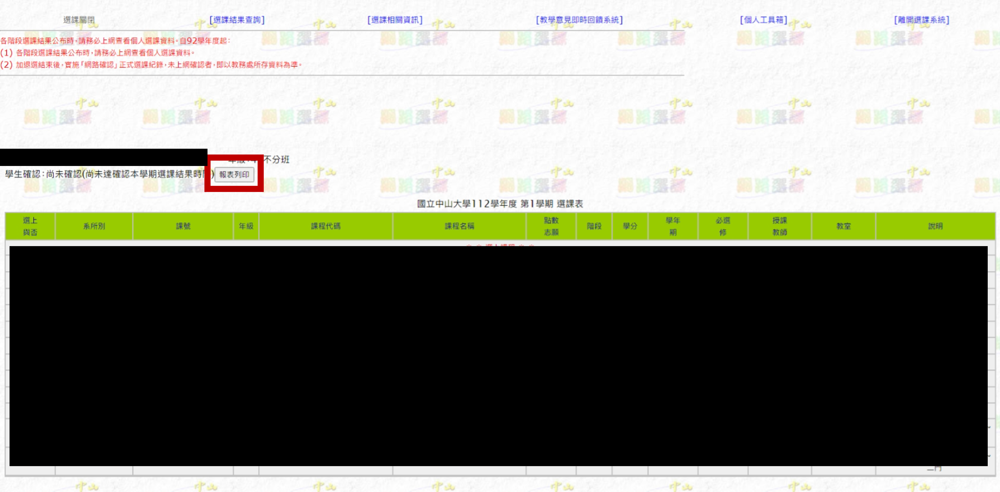

重新撰寫中
即將開放，敬請期待！
← BACK
← BACK

手把手告訴你怎麼異常處理
請先登入選課系統、開啟查詢課程網頁
注意：只要是異常處理，就會需要跑流程，無法單純在選課系統操作完成。異常處理可以加簽也可以退選，但就是需要簽名與跑流程。
提示：如果想在異常處理階段退選課程，此時退選不會在成績單上留下紀錄，但必須要找授課教授簽名。

選擇 [選課相關資訊] → [列印【選課紀錄異常處理申請表】]
系統會列出 "所有已選上課程"，以及之前 "曾登記加選過但未選上" 的課程。
如果你想加 / 退選的課程已經列在上面的清單中了，那就依照以下步驟：
提示：通識課程包括
貼心提示：加簽通識課程建議原因選擇Ｂ４！
如果你選錯原因了，送繳資料時還是會被要求更改 + 簽名！
如果你想加選的課程沒有被列在上面的清單中，請依照以下步驟，在系統下方的橘色部分操作：

貼心提示：加簽通識課程建議原因選擇Ｂ４！
再次提醒：如果你選錯原因了，送繳資料時還是會被要求更改 + 簽名！
兩個欄位都填完了，但還要加簽更多課？系統沒辦法新增欄位，你只能先把這張印出來，再重複前面的步驟加簽其他課程。
注意：無論是要加簽、退選，無論該課堂是通識課程、一般課程、其他課程，都可以統一一次申請完畢，只要系統填的下，就不必分次申請與列印。

在給老師簽名之前，請先簽上自己的名字。
自行跟授課老師約好時間，找老師簽名；如果是博雅向度（GEAE開頭課號）、英語文課程（GEEN開頭課號）及服務學習（GESL開頭課號）課程，一定要額外跟老師拿到綠色加簽貼紙，否則西灣學院不會受理加簽申請。
綠色加簽貼紙如上圖，貼在老師簽名附近。
自行跟導師約好時間，找老師簽名；如果找不到老師，就去找自己系的系辦。
只要你有加簽通識課程，就必須到選課系統上列印當學期課表，讓西灣學院確認你沒有衝堂。
選擇 [選課結果查詢] → [目前選課資料] → [報表列印]，全部印出來

列印課表如下圖所示：
如果你有加簽 / 退選通識課程，且單子已經繳交至西灣學院了，就不必自行繳交至教務處，西灣學院處理完通識課程的異常處理後，會直接幫你送交至教務處，接續處理其他課程的異常處理申請。
注意：異常處理需要時間，如欲確認是否異常處理成功，建議於 2 至 5 個工作天後再上系統查詢，如遇到問題再詢問行政人員。
拯救那些水深火熱、搞不懂異常處理的同學😭
成為選課英雄的你，點擊下方按鈕複製本頁網址，貼給那些同學們吧！
選課階段告一段落了，倘若期中過後你想要棄選課程，可以參考下個說明。